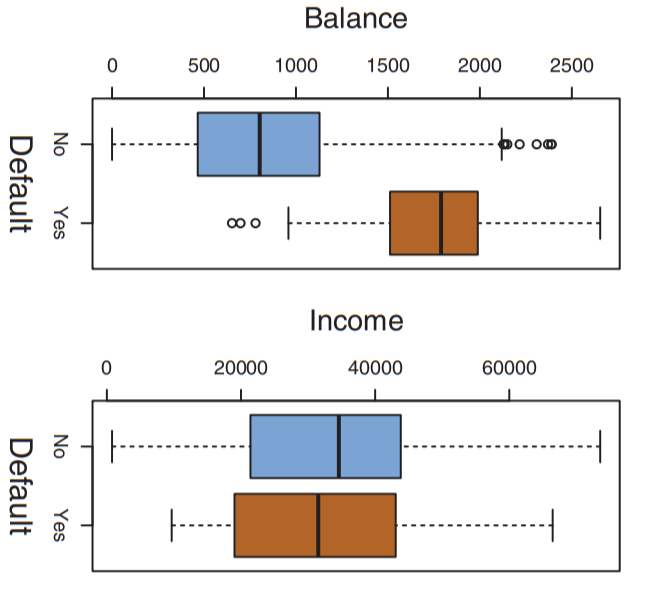
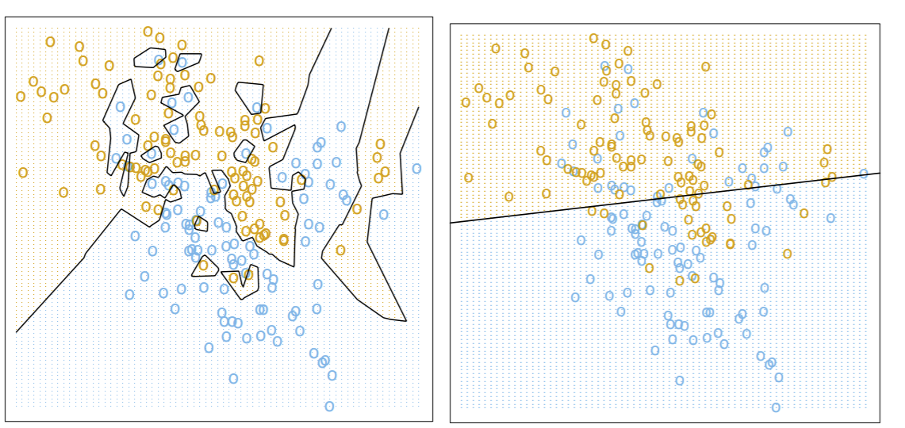
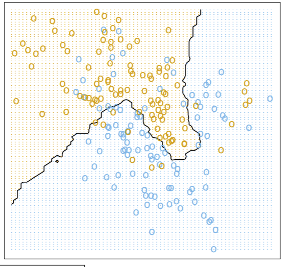

Classification¶
Let’s begin our ML journey with the problem of classification.
As always, we begin with a practical usage for this problem. A very common usage of classification is employed with credit card companies, who want to predict if an applicant will default on their credit balances on not, based on some background checking. Let’s see this visually:

In the above graph, each point corresponds to a credit card user. Notice each person (each point) was defined by their credit balance and income - the two most important features that determine someone’s credit risk in this case. Points with a brown '+' are people who defaulted on their credit, and points with a blue 'o' are those who did not.
That’s great and all, but what can we do with this? Ideally, we want to use these examples (and the graph it makes) to classify whether a future applicant is a credit risk or not. Specifically, as stated in this book’s intro, we’re looking for some pattern in the data that can help with this classification.
First, to gain some intuition, let’s look at the distribution of the two features (balance and income) alone:
{kind=link}
Note that the difference in balances for those who do default and those who don’t are significantly different, while income looks fairly similar. This means that balance is probably a more influential factor in classifying someone as a risk or not. However, that does not mean that income isn’t useful- not at all. We can still use it as sort of a “second-level” predictor: if we can’t tell if someone’s a risk based on their credit balance, then we use their income.
To put this more generally, collecting our dataset of credit card users for whom we know defaulted/not is collecting our training data. We call this training data because we use these points to “train” or “fit” a model that will then try to generalize and predict the class of new, unseen data. This model will be some numerical rule. In the dataset above, the rule that makes the most sense is a straight line: points to the right of this line are risks, and points to the left are not.
So let’s say we’ve fitted our model on our training data, and we get our line (shown in red below). Now, say a new applicant comes in, shown as a black square. In ML, we call this new, unseen data point a test point: we want to test whether our classifier can classify it correctly or not.

Do we classify this applicant as a risk? Probably not, since our rule says that any point to the left of the line is not a credit risk. By the way, this line has a special name, the decision boundary: it literally is the boundary where the decision for a point is made whether it is a risk or not. Such a boundary, as we’ll see later, does NOT have to be a line!
So right now our model is just a linear decision boundary that classifies points on its right as risks and points on its left as not. But our model doesn’t have to be this way. Another model we might use is the nearest-neighbors model: given a point, find the training point that is closest to it and use that neighbor’s classification as its own. With this we make the big assumption that similar points (in terms of the features we’re using, income and balance) will be close together.
Which one should we use? Let’s compare the behavior of the nearest-neighbor classifier (left) to that of a linear classifier (right).
{kind=link}
The obvious advantage of the NN-classifier is that it always predicts training data correctly: in other words, 100% training accuracy. Another way to think about this: if our test point was the same exact point as one of our training points, it would always be classified correctly. This is a good thing, right? If 100% is good for human learning in school, it’s gotta be also good for machine learning, right?
NO. Remember the goal is not to have good training accuracy, but to have good test accuracy: we want to predict unseen data correctly. Note the decision boundary for the NN-classifier is all fucked up- and probably won’t do the greatest job at predicting new data because of it. There’s a special machine learning term for this: overfitting. Whenever you see these weird arbitrary decision boundaries, it’s usually a good sign you might be overfitting to your data.
Now look at the linear classifier’s accuracy. The training accuracy is actually pretty bad: there’s a lot of blue points in the left region where yellow is being predicted. Same for the yellow points in the blue region. But the decision boundary is less complex, so it might generalize to unseen data better.
Which one to use? No right answer - it depends the context and other factors. But now you know the basic idea behind classifiers and their decision boundaries.
What if we adjust the NN algorithm so that instead of a single nearest neighbor, we pick the 15 nearest neighbors and classify our test point based on the majority class of those 15 neighbors? Well then we get this much less janky decision boundary:
{kind=link}
So even though we misclassify a lot more training points, like with the linear decision boundary, we can expect this model to generalize (predict unseen data) much better.